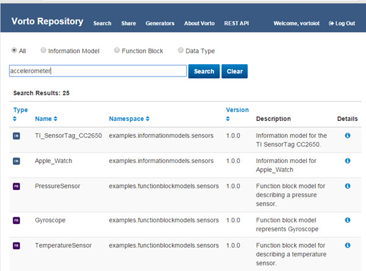
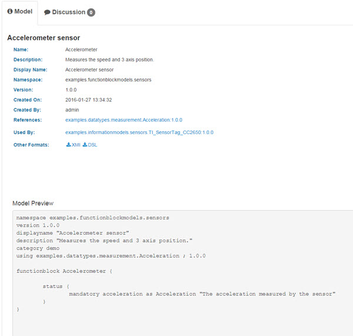
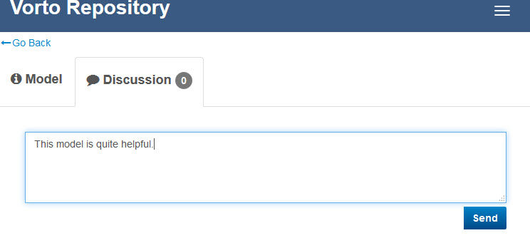
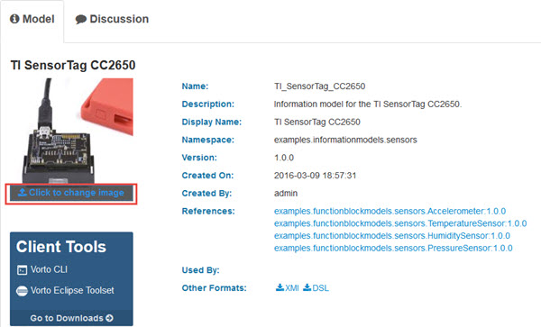
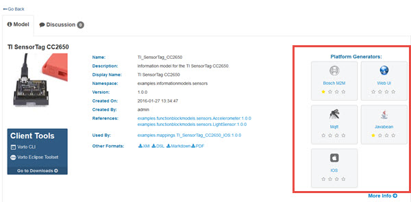
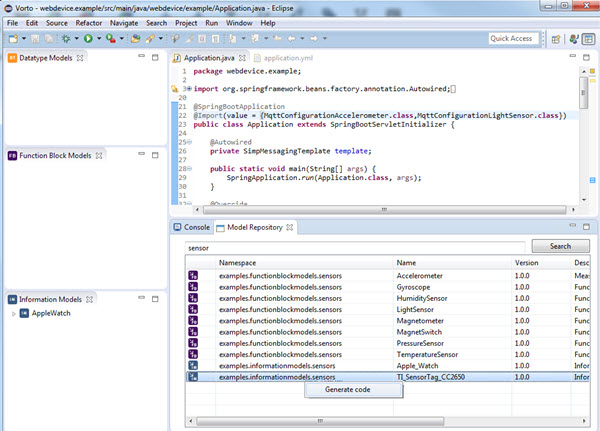
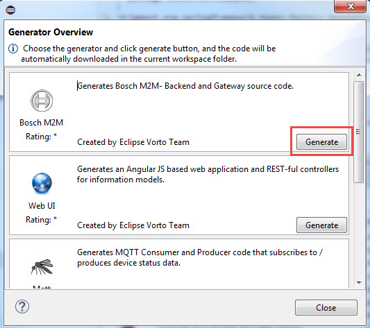

Search models in the repository
The user can search for the existing models in the repository and use this shared model as reference in a local model project.
There are 2 ways of accessing vorto repository.
Model Repository page
Prerequisite
Steps
- Search for a function block e.g. Accelerometer

- Click
 to get more information on the selected model. Details of the selected model gets displayed as shown below
to get more information on the selected model. Details of the selected model gets displayed as shown below
References Displays the function block model or datatype that the selected model is referencing to
Used by Displays the Information model(s) or Function block model(s) using the selected model

-
Choosing either one of the values in References or Used by should open more details about the selected device.
-
Under Other formats select the format of your choice. This translates the information model to the specific format, e.g. XMI, DSL or Markdown.
Discussions
Users can comment on the selected model from the Discussions tab

Image for information model
The user can upload a suitable image for the information model by clicking on the space available for image.

Generate code from model repository
Choose one of the existing generators to generate the souce code. Save the *.zip to your desired directory and import it in your eclipse workspace.

Vorto Perspective
More information on how to use the vorto repository from the vorto prespective can be found here Model Repository Blog post
Generate code from vorto perspective
Right-click on the selected model in the model repository and click Generate code, to generate the source code.

Choose one of the existing generators to generate the souce code. The source code should be available in the java perspective.
